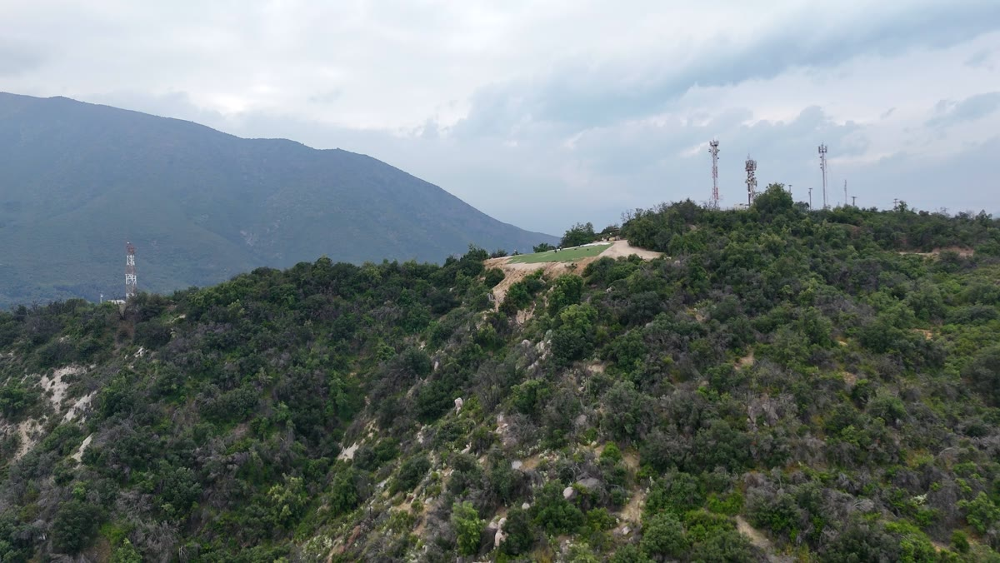
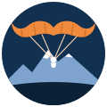
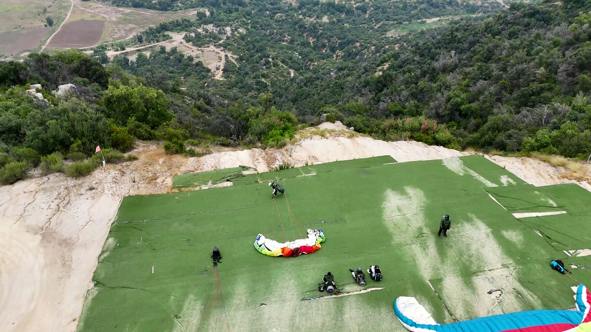
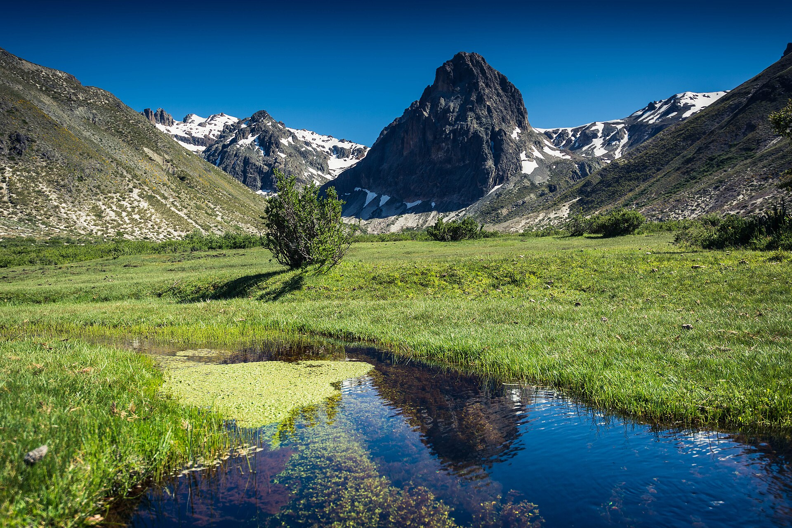

Hoy
Las Vizcachas, Santiago
GeoPark Las Vizcachas, Camino a San José del Maipo, Puente Alto. A minutos de Santiago y con vista al Cajón del Maipo.

ParapenteAndino WhatsAppParapente en Santiago · pronto en Molina
Vuelos en parapente biplaza y escuela de pilotos con Hugo Sepúlveda: instructor de vuelo, paracaidista y piloto de avión. Tres licencias, un mismo cielo.
Vuelo biplaza
Despegas desde el cerro junto a Bigote, en un parapente para dos. No necesitas experiencia: te explica todo en tierra, corres unos pasos y ya estás volando sobre el valle, con la cordillera al frente.

Una tarjeta de regalo para cumpleaños, aniversarios o para esa persona que siempre dijo “algún día”. Quien la recibe elige el día y vuela.
Escuela de parapente
El curso sigue las cinco temáticas que evalúa la DGAC y termina con tu licencia de alumno piloto. Se avanza de lo fácil a lo difícil, de lo bajo a lo alto, sin saltarse nada.
Edad mínima recomendada: 17 años, con permiso escrito de los padres si eres menor de edad.
Pedir el programa del cursoQuién es Bigote
En el despegue nadie lo llama Hugo: es Bigote. Paracaidista, piloto de avión e instructor de parapente, conoce el cielo desde tres lados distintos, y hoy enseña a volar a quien quiera aprender.
Dónde volamos

GeoPark Las Vizcachas, Camino a San José del Maipo, Puente Alto. A minutos de Santiago y con vista al Cajón del Maipo.

Bigote se va a vivir a Molina y llevará el parapente a la precordillera del Maule, camino a Radal Siete Tazas. Si estás por allá y quieres volar, escríbele y te avisa apenas parta.
Escríbele a Bigote por WhatsApp: te cuenta las fechas, el valor y cómo llegar.